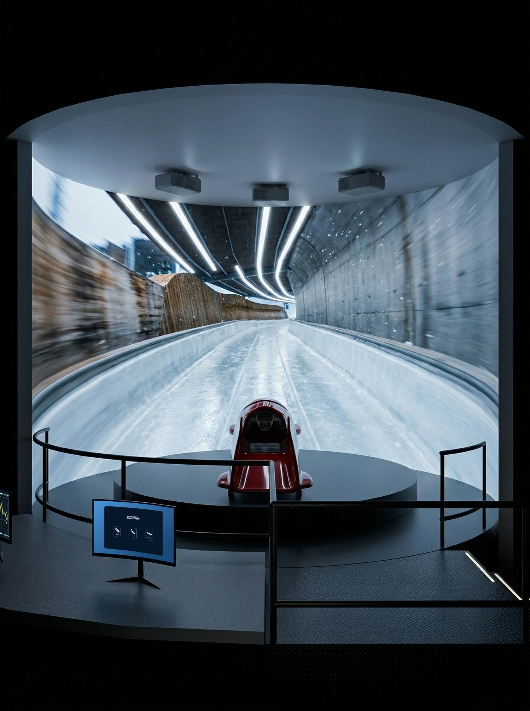
Sliding Simulator
A sliding-sports simulator that recreates the Olympic track in Cortina to train athletes’ memory and anticipation. It was developed ahead of the Milano-Cortina 2026 Winter Olympics.
- Role
- UX/UI Designer
- My part
- User research, UX/UI and 3D modelling
- Timeline
- Dec 2024 – Dec 2025
- Tools
- Figma, Blender, Unity
Problem
Sliding-sport athletes rarely get to train: there are few tracks, they open only in winter and every run is expensive. Without practice, the memory of the track and the ability to anticipate curves fade.
Solution
A simulator of the Cortina Olympic track with cognitive and dual-task exercises that train memory and anticipation during the descent, and a separate interface for the coach.
The problem
Pilots must know the track by heart, but they rarely get to practise on it.
At over 130 km/h there is no time to react once a curve appears: pilots have to steer before entering it, along a line they already know, because every late correction costs time. Going fast therefore depends on knowing the track by heart and anticipating each curve. Yet there are only a few tracks in the world, they are open only in winter and every run is expensive. Without regular practice, the memory of the track and the ability to anticipate fade.
How pilots prepare
Vision comes first
Pilots time their steering on markers along the track, such as poles, trees, shadows and lamp posts.
Track walk
Before every run they walk the track to memorise the curves and the ice.
Visualisation
With their eyes closed, they go through the descent curve by curve, imagining every steering movement.
“Reacting during a curve means you are already too late.”Bobsleigh pilot, Axe Racing
What simulators offer today
Realistic tracks
Simulators have moved from fixed platforms to motion systems and VR, with more and more accurate tracks.
No mental training
None of the simulators analysed includes cognitive or dual-task exercises, although pilots need them.
Two interfaces
Other sports simulators keep the athlete’s display minimal and give the coach a dashboard for modes, difficulty and data.
Dual-task training
Working memory is limited. Adding a second task while steering, such as remembering a sequence or reacting to a cue, recreates the mental load of a race. Training under that load helps pilots automate their gestures and focus on what matters.
How might wetrain a pilot’s memory and anticipation in a simulator, without breaking the immersion of the descent?
Users
The pilot, the coach and the technician need different things from the same system.
Three personas
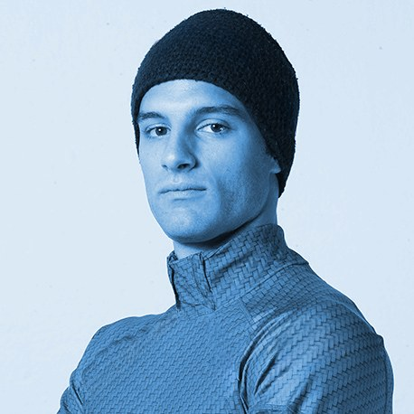
Alex
Learn a new track and its best line as quickly as possible.
- A realistic descent
- Clear feedback on each run
- An interface that lets him focus on driving
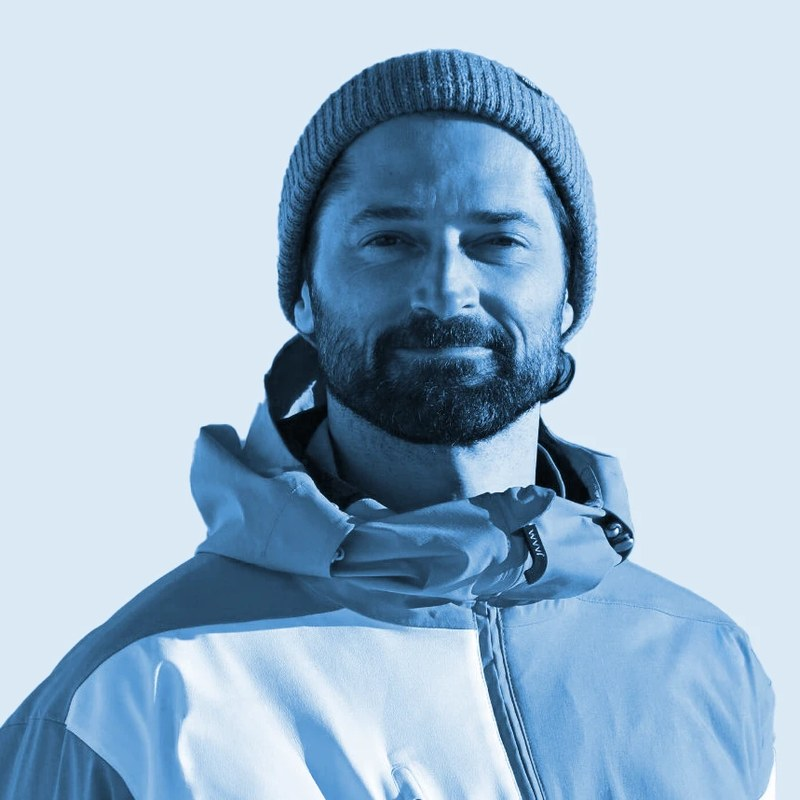
Umberto
Design training routines and follow each athlete’s progress over time.
- One place for every athlete’s data
- Results he can read quickly
- No technical setup
Giacomo
Make the simulator as precise and reliable as possible.
- Advanced settings and diagnostic data
- Real-time monitoring
- Analytics for debugging and maintenance
The system is split in two: the pilot sees only the first-person track on the curved screen, while coaches and technicians use a second interface on an external computer.
Exercises
Three exercises for four training needs: repetition, visualisation, reactivity and anticipation.
The coach sets the difficulty of each exercise on a setup screen, with a preview of what will happen on the track.
Track Run
Pilots can repeat the full track or a chosen section as many times as they want, without the limits of a real track. This builds muscle memory and collects data on every run.
Bubble Memory
Up to 14 bubbles appear at the points where pilots usually take their references. Each one shows a colour, a number or both, and at the end the pilot reports the whole sequence.
Blind Curves
Some sections of the track go black. The pilot sets the trajectory before the curve, keeps control by relying on body sensations, and corrects as soon as vision returns.
3D environment
The Olympic track, modelled while it was still under construction.
The Cortina Sliding Centre was reconstructed from its executive project, topographic data and aerial photos. A point cloud became the track mesh, then came the surroundings, all following the International Bobsleigh and Skeleton Federation rules.
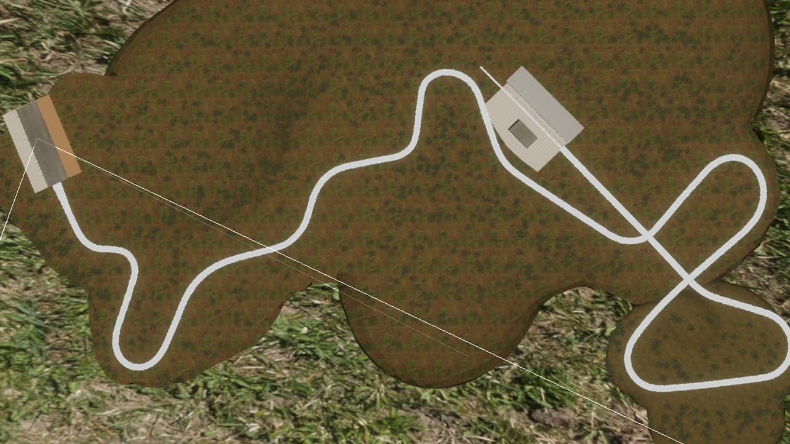
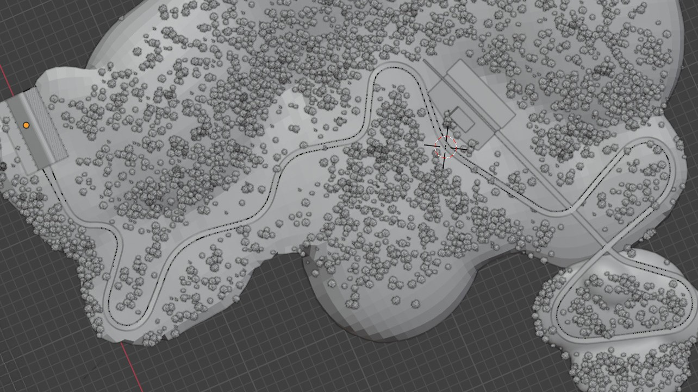
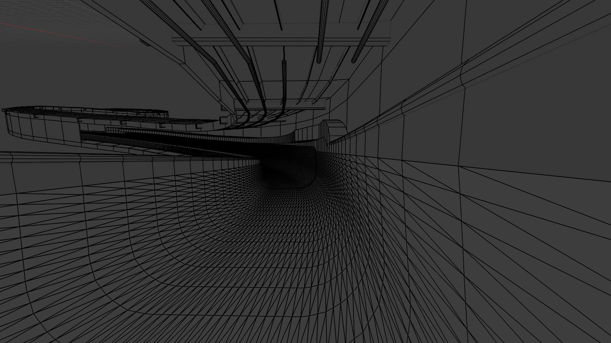
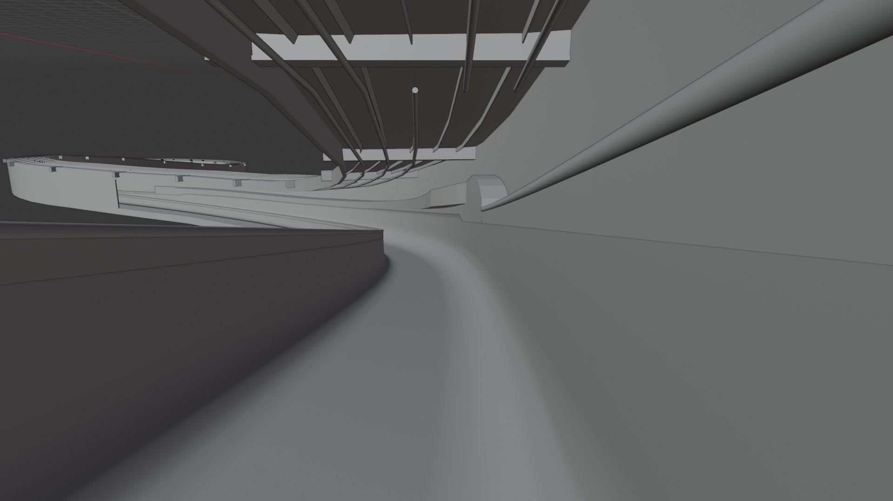
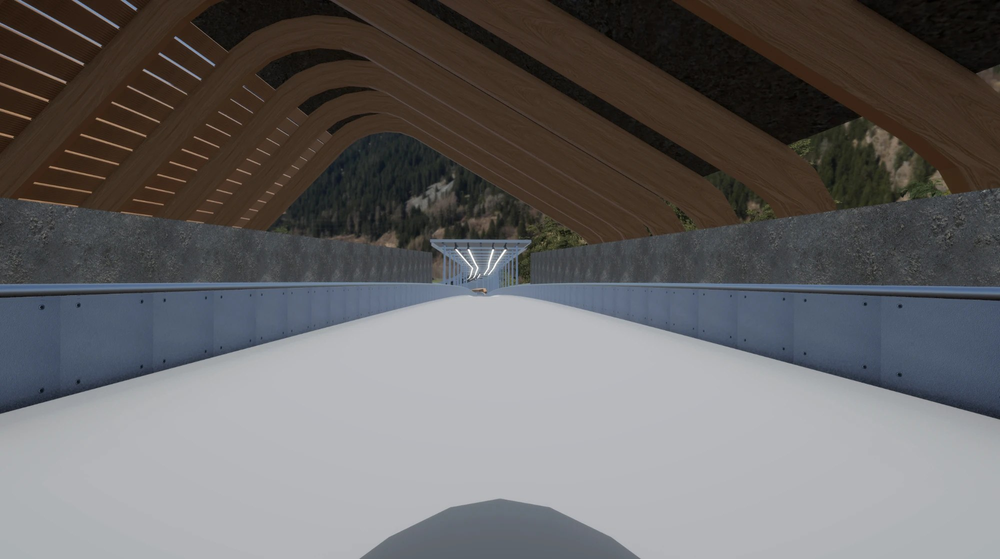
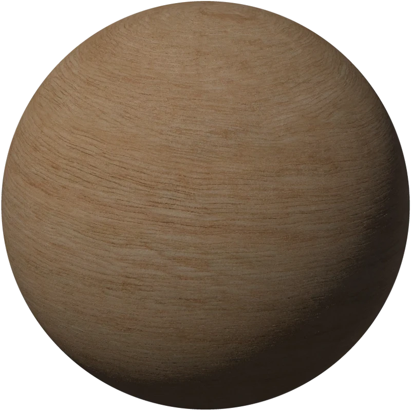
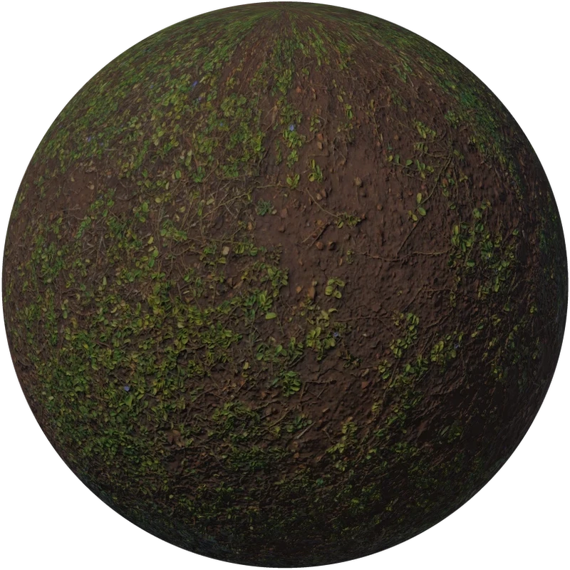
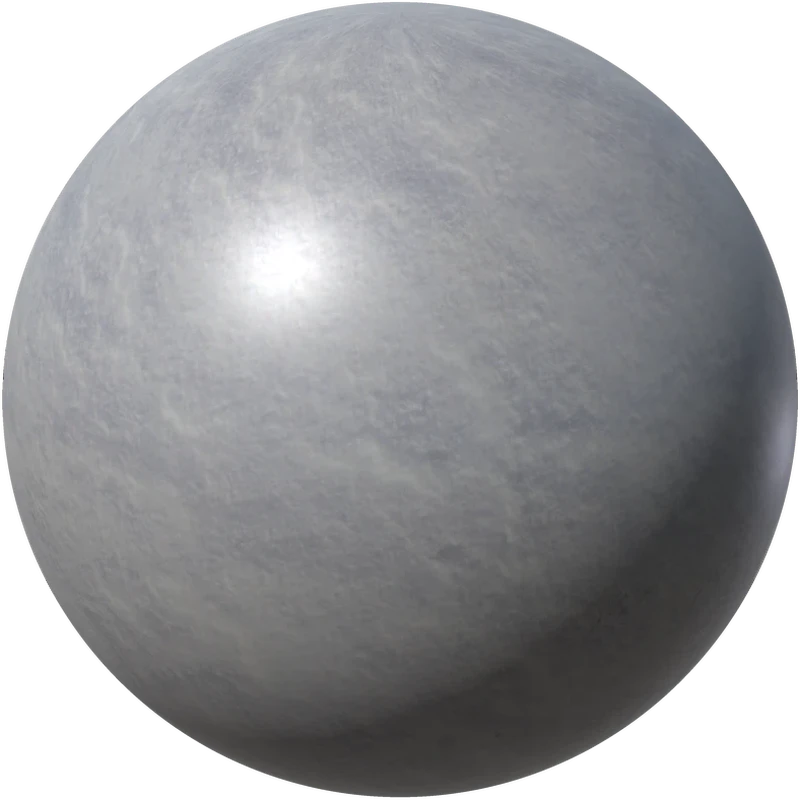
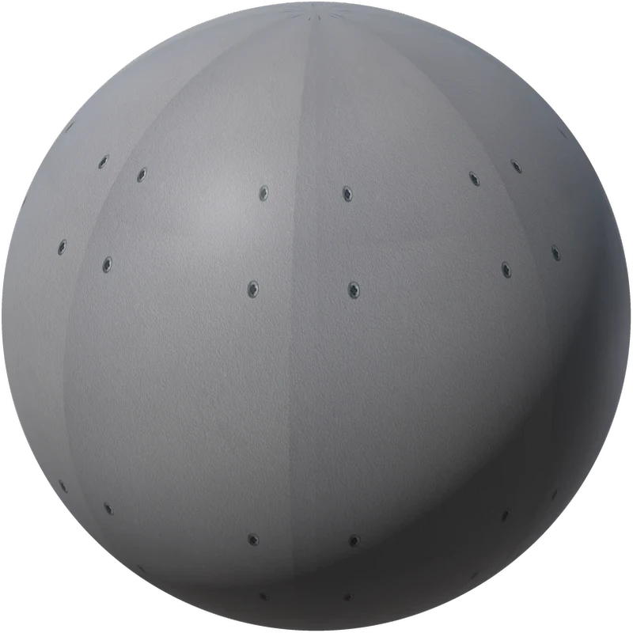
Final design
A simulator that trains the pilot’s memory and anticipation during the descent.
While steering down a virtual copy of the Cortina track, the pilot repeats sections, memorises a sequence of bubbles, or drives through curves that go black.
For the coach, the interface follows the order of a real training session.
Access
Logging in takes only a nickname, because the profile is used just to calibrate the pilot’s point of view.
Training
During the run, the pilot sees only the track. Time, speed and the essential controls are on the coach’s screen.
Review
After Bubble Memory, coach and athlete rebuild the sequence, then see which answers were wrong.
Statistics
Every result is saved automatically and can be found by date. Each exercise has its own view of how the athlete is progressing.
Built for Hexalab
The interface was prototyped in Figma and implemented in Unity. At Hexalab, the pilot sits on a motion platform in front of a curved screen, while the coach follows the session from a separate computer.
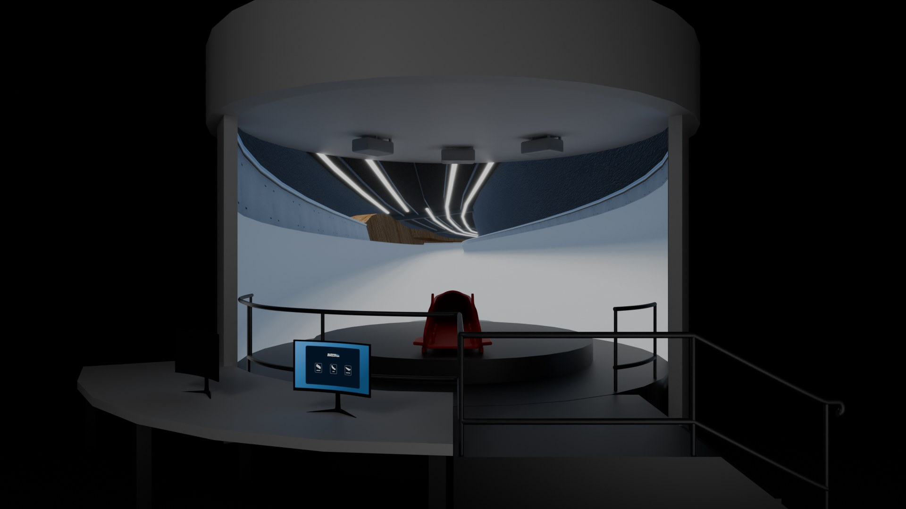
Test & next steps
The interface was tested with non-professionals.
People of different ages and levels of tech familiarity tried the prototype on a computer, imagining they were a coach bringing an athlete to the simulator. They thought aloud while creating an account, running Bubble Memory and reading the statistics.
The main changes were keywords on the exercise cards, undo and redo in the recall screen, and separate views for full and partial runs in the statistics.
The limits of the test
The participants weren’t bobsleigh professionals, and they used a prototype instead of the simulator. The test shows whether the interface is clear, but not whether it works in real training, especially the statistics.
Next steps
The next round of tests should be with professional athletes.
- Test with athletes and industry experts, especially the statistics.
- Validate the VR version, including motion sickness.
- Extend the simulator to skeleton and luge.
- Increase realism with a 3D scan of the track, and explore exercises that adapt with AI.